/math-d2583020b138319a535bc3c88278ab33.png "x_i\,\!") : ケース i に対する結果スコアをテスト
: ケース i に対する結果スコアをテスト
ここでは、次の表記が使われます。
: ケース i に対する結果スコアをテスト
/math-d750fff2ef5c4d25bcff29719305177a.png "n_{TP}\,\!") : 真の正の判定数
: 真の正の判定数
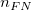 : 偽の負の判定数
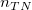 : 真の負の判定数
: 偽の正の判定数
: 負の実際の状態を持つケースの数
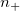: 正の実際の状態を持つケースの数
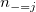: 結果が～に等しい負のケースの数
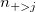: : 結果が～より大きい正のケースの数
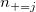: : 結果が～に等しい正のケースの数
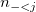: : 結果が～より小さい負のケースの数
1- 特異性 (X): 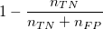
敏感度 (Y):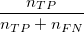
を検定結果変数の状態値とします。は、 値が負の実際の状態値で、 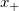は値が正の実際の状態値です。そして、ROC曲線以下の"true"面積のノンパラメトリック近似性、/math-0a5000fe8b6b5570dd5a1ce00b828ef6.png "\theta \,\!") は下記のようになります。
は下記のようになります。
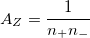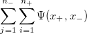
ここでは、 +のサンプルサイズ、 !は、 -のサンプルサイズで、以下のようになります。
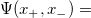 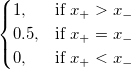
/math-695617aa4d2b4e1c93f4ffa59c529d83.png "A_z\,\!") は、ROC曲線以下の観測された面積で、このROC曲線は、連続したポイントを台形法などにより直線で接続したものです。
は、ROC曲線以下の観測された面積で、このROC曲線は、連続したポイントを台形法などにより直線で接続したものです。
を計算する別の方法は、以下のようになります。
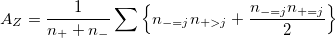
の標準偏差は、次の式で計算できます。
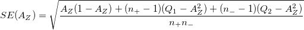
ここで
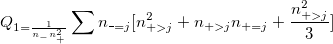
および
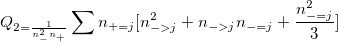
ROC曲線以下の真の面積に対する2方向の漸近の信頼区間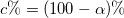は
/math-235de6eb21ed53705c7979a6ce5fb929.png "A_Z\pm SE(A_Z)\,\!")
は、 であるような帰無仮説において漸近的に標準なので、 であるような帰無仮説の漸近のP値を計算できます。それに対し、対立仮説は
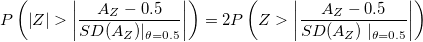
ノンパラメトリックな場合において、
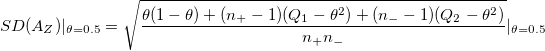
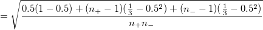
カットポイント値は、これら2つの量の等価性の最大化（SpEqualSe）によって定義されます。これは、ROC曲線のmin（abs(1-x-y)）です。